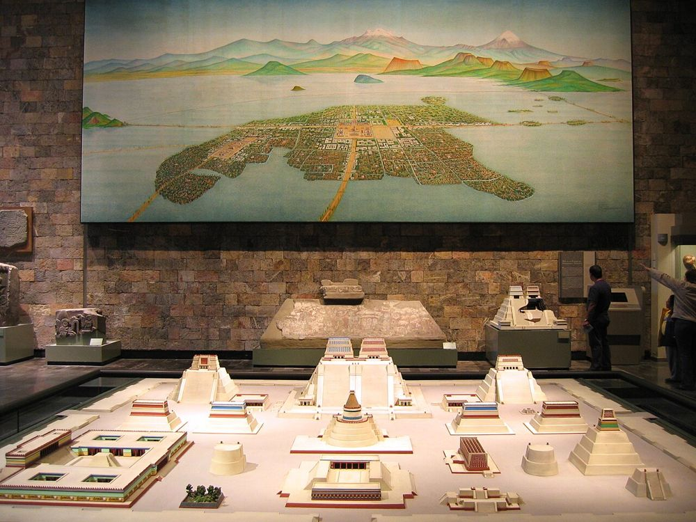
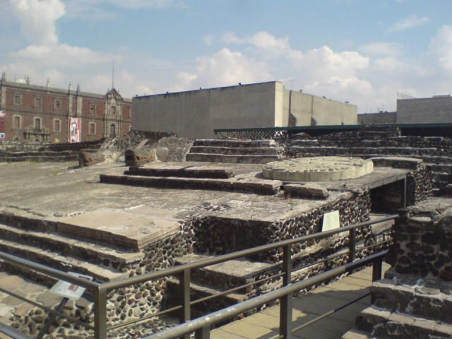

1Algı ile gerçek
Aztekler deyince aklımıza piramit şeklinde tapınaklar, tüylü başlıklar ve çok eski, gizemli bir medeniyet gelir. Oxford Üniversitesi ise bugün hâlâ öğrenci kabul eden, modern bir okuldur. Bu yüzden Azteklerin Oxford'dan çok daha eski olduğunu düşünürüz. Gerçek ise tam tersi.

2Oxford: 900 yıllık okul
Oxford'da öğretimin 1096'da başladığı biliniyor. Bu tarih onu İngilizce konuşulan dünyanın en eski üniversitesi yapar. 1167'de İngiltere Kralı II. Henry, İngiliz öğrencilerin Paris Üniversitesi'nde okumasını yasaklayınca Oxford hızla büyüdü.
Görseldeki Radcliffe Camera binası ise 1700'lerde yapılmıştır. Yani Oxford'un en tanınan binaları bile üniversitenin kendisinden yüzlerce yıl gençtir.
3Tenochtitlan: Göl üzerinde bir şehir
Aztekler, efsanelerine göre bir kartalın kaktüs üzerinde bir yılanı yediğini gördükleri yere şehirlerini kurdular. Bu yer, Meksika Vadisi'ndeki Texcoco Gölü'nde bataklık bir adaydı. Tenochtitlan yaklaşık 1325'te burada kuruldu.
Şehir kısa sürede büyüdü. Kanallar, geçitler, yüzen bahçeler ve dev tapınaklarla dolu, belki 200.000 kişinin yaşadığı, zamanının dünyadaki en büyük şehirlerinden biri oldu. Aztek İmparatorluğu da 1400'lerde güçlenerek büyük bir bölgeye hükmetti.

4Sonuç: İki yüzyıllık fark
Yani Oxford'da dersler başladığında Tenochtitlan henüz yoktu. Şehir kurulduğunda Oxford iki yüzyıldan fazla süredir eğitim veriyordu.
1521'de İspanyol fatih Hernán Cortés ve yerli müttefikleri uzun bir kuşatmadan sonra Tenochtitlan'ı ele geçirip büyük ölçüde yıktı. O sırada Oxford 400 yaşını geçmişti. Bugün Tenochtitlan'ın kalıntıları Meksiko şehrinin altında yatıyor. Ana tapınak Templo Mayor'un kalıntıları şehir merkezinde ziyaret edilebiliyor.
💡 Biliyor muydun?
- Meksika bayrağındaki kaktüs üzerinde yılan yiyen kartal, Tenochtitlan'ın kuruluş efsanesinden gelir.
- Dünyanın hâlâ faaliyette olan en eski üniversitesi olarak genellikle Fas'taki El-Karaviyyin gösterilir. 859'da kurulduğu kabul edilir.
- Oxford'da eğitim, belirli bir kuruluş belgesiyle değil, zamanla kendiliğinden gelişti. Bu yüzden kesin bir 'kuruluş günü' yoktur.
✅ Kaynaklar
📷 Görseller
- Kapak: Diliff · CC BY 2.5 · Wikimedia Commons
- Meksiko'daki Ulusal Antropoloji Müzesi'nde Tenochtitlan'ın canlandırması: https://www.flickr.com/photos/rosemania/ · CC BY 2.0 · Wikimedia Commons
- Meksiko şehir merkezinde Aztek tapınağı Templo Mayor'un kalıntıları: Lobato62 · CC BY-SA 4.0 · Wikimedia Commons